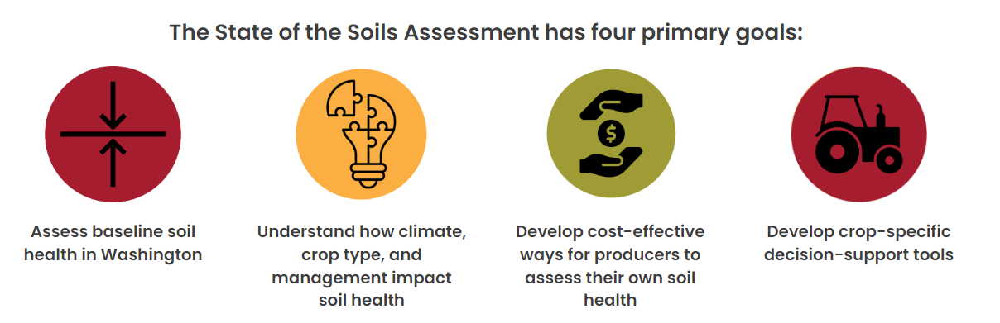
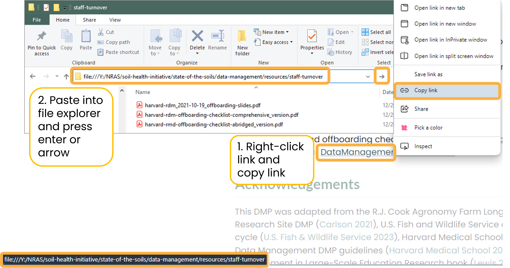

Data Management Plan
Washington Soil Health Initiative: State of the Soils Assessment
1 Overview
The Washington Soil Health Initiative (WaSHI) is a partnership between the Washington State Department of Agriculture (WSDA), Washington State University (WSU), and the State Conservation Commission. WaSHI establishes a coordinated approach to healthy soil in Washington.
To date, nearly 1,000 soil samples and management surveys across 50 different cropping systems have been collected as a part of the state of the soils assessment (SoSA). WSDA and WSU lead this project with support from staff, students, conservation districts, and agricultural professionals throughout Washington.

1.1 Chapter outline
This Data Management Plan (DMP) is a living document will be continually reviewed and improved based on lessons learned, new information, and collaborator feedback.
This DMP is best viewed in Google Chrome since the browser can open local file links using the Enable local file links extension that should automatically be enabled by our organization.
When viewing this DMP in Microsoft Edge, hyperlinks to files and folders on our shared drive are not accessible in the browser. Nothing will happen when clicking on the links. To open the file or folder, right-click on the hyperlink > copy the path > paste it into the search bar of the file explorer > press Enter or click the arrow.

1.2 Roles and responsibilities
All WaSHI personnel who will be interacting with SoSA data must familiarize themselves with the contents of this document. Following chapters with technical details will be referenced when relevant. If all collaborators are not consistently implementing this DMP, then the benefits of effective data management are lost.
The WSDA Data Scientist, supported by the project Principal Investigators (PIs), is responsible for providing guidance to WaSHI staff working with SoSA data and ensuring the implementation of the DMP. The Data Scientist is also responsible for reviewing and updating this document annually, and as needed. Upon updates, the Data Scientist will distribute this document to WaSHI staff and commit the source code to the GitHub repository.
| Role | Affiliation | Name |
|---|---|---|
| Data Scientist | WSDA | Jadey Ryan |
| Co-PI | WSDA | Dani Gelardi |
| Co-PI | WSU | Deirdre Griffin LaHue |
| Data Stewards | WaSHI personnel |
1.3 Acknowledgements
This DMP was adapted from the R.J. Cook Agronomy Farm Long-term Agroecological Research Site DMP (Carlson 2021), U.S. Fish and Wildlife Service data management life cycle (U.S. Fish & Wildlife Service 2023), Harvard Medical School Longwood Research Data Management DMP guidelines (Harvard Medical School 2023), and the Data Management in Large-Scale Education Research book (Lewis 2023).